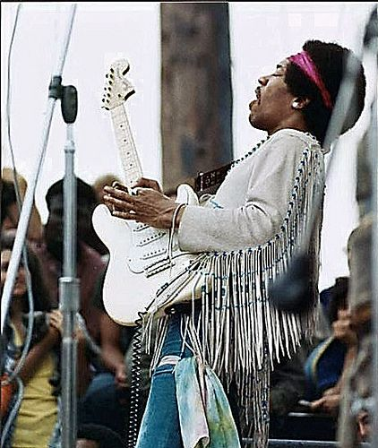
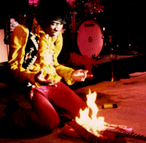

Jimi Hendrix Woodstock 69
James Marshall "Jimi" Hendrix
November 27, 1942 – September 18, 1970James Marshall "Jimi" Hendrix (born Johnny Allen Hendrix; November 27, 1942 – September 18, 1970) was an American musician, singer, and songwriter. Although his mainstream career spanned only four years, he is widely regarded as one of the most influential electric guitarists in the history of popular music, and one of the most celebrated musicians of the 20th century. The Rock and Roll Hall of Fame describes him as "arguably the greatest instrumentalist in the history of rock music".

Albums:
- Are You Experienced? - 1967
- Axis: Bold As Love - 1967
- Electric Ladyland - 1968